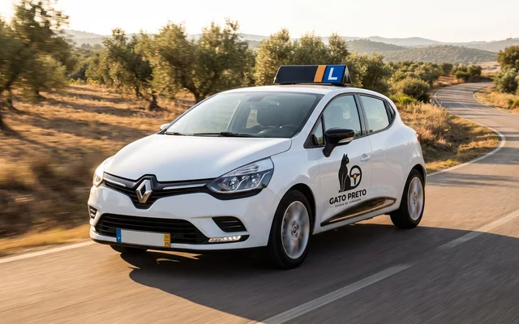
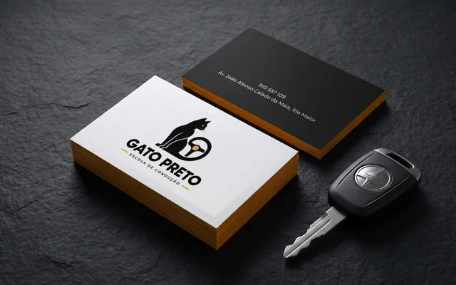
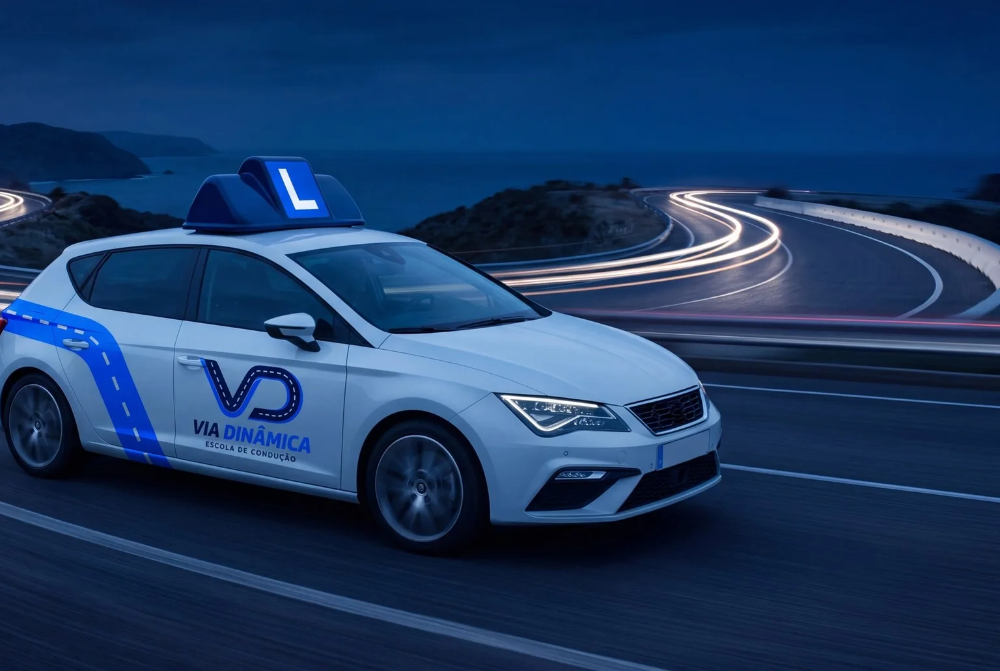
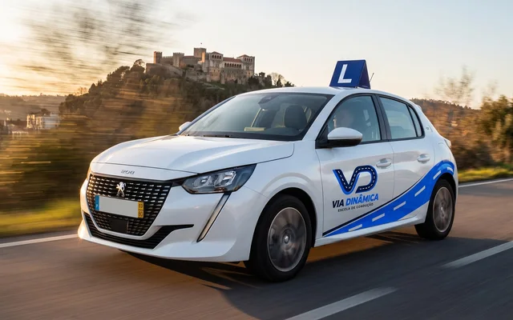
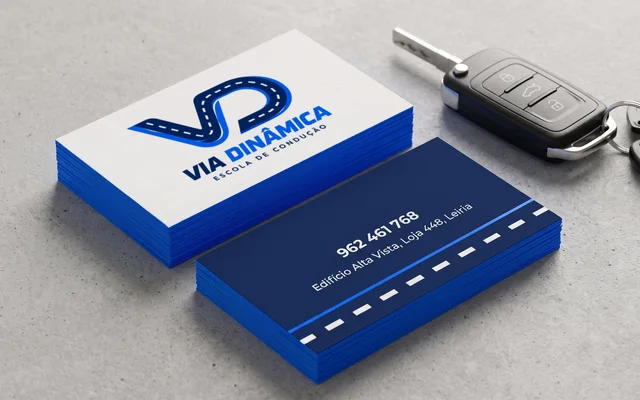
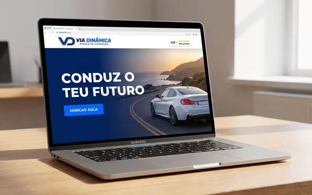
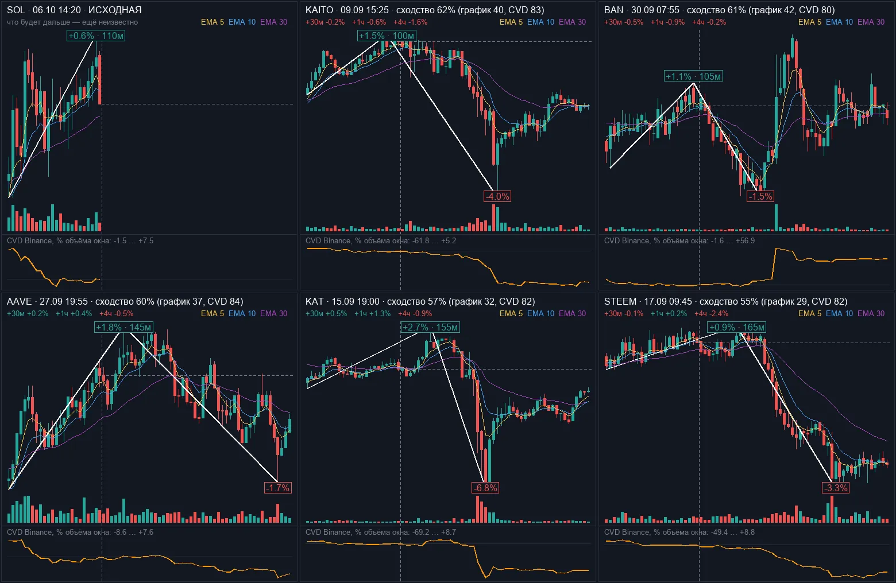

A local driving school with a good name and no image to match: nothing that reads from across the street, on a car door or on a phone screen.
What we did
The logo turns the old superstition around: the black cat brings luck at the wheel
Black for confidence, amber of the indicator light for attention on the road
51 applications: fleet livery, motorbike and helmet, façade by day and night, cards, student pass, website, Instagram, billboards, merch, certificate
A 72-page brand manual with colours, type, clear space and every mock-up
Now
A complete identity we designed from scratch and offered to the school, ready for print and the car-wrap shop.



08 · Driving school, Leiria · Portugal
Via Dinâmica
Brand identityLogoBrand manualConcept
The task
A driving school in a busy shopping centre needed to look modern, young and trustworthy to students and their parents.
What we did
The road draws the letters: lanes and curves form one continuous V and D
Night blue for rigour, electric blue for energy and youth
50 applications: fleet, motorbike and helmets, reception desk, façade, cards, website, booking on the phone, outdoor, welcome kit
A 71-page brand manual, from the first lesson to exam day
Now
A complete identity we designed from scratch and offered to the school, ready for print and the car-wrap shop.



Companies
Teams we have worked with
Online platform · millions of users
1win
We worked on the systems behind one of the biggest online platforms. Our job: the site keeps working fast even when huge numbers of people use it at the same time.
Big trafficAlways online
Crypto exchange service
1inch
Websites and tools for 1inch, a service where people exchange crypto. Everything has to be clear, fast and exact — people move real money there.
WebsitesCrypto
GTProtocol
Crypto + AI platform
GT Protocol
A platform where AI helps people trade crypto: it builds a strategy, tests it on past data and runs it automatically.
AICryptoPlatform
More projects
Apps, bots and platforms for businesses
Paid product · 100+ users
Crypto arbitrage parser
The same coin often costs a little less on one exchange than on another. The parser watches dozens of exchanges at once, draws the spread on a chart and shows both order books side by side — so you buy where it is cheaper and sell where it is dearer, at the same moment. That gap is the profit, and we trade it ourselves.
ArbitrageReal-time dataSubscription
Paid product · trades by itself
MEXC arbitrage bot
The next step after the parser: the bot finds the price gap and makes both trades on its own, faster than a person can click. Dozens of people bought it; on the best day one user earned over $7,000.
AutomationArbitrage
Exchange trading automation
Trading automation platform
Bots that open and close trades on the exchange by the trader’s rules: entry, take-profit, stop-loss and position size are calculated for every trade, with limits that protect the deposit.
Trading botsRisk control

Telegram bot
Crypto signals bot
Every day it finds charts that look like today’s and shows what happened next. The trader gets the picture in Telegram and decides in seconds.
TelegramAI
Sales automation
OLX auto-posting
Kept a client’s listings at the top of OLX all day, every day, without paying for promotion. More views, more calls.
More salesAutomation
Under NDA
This is only part of our work.
Most of what we build — trading systems, CRMs, internal tools and stores for brands — is covered by NDA, so we can’t show it here. Tell us your field and we will send you private cases from it.
Want a project like these?
Tell us about your business — we reply within 2 hours, 24/7, with a plan, a price and a deadline.